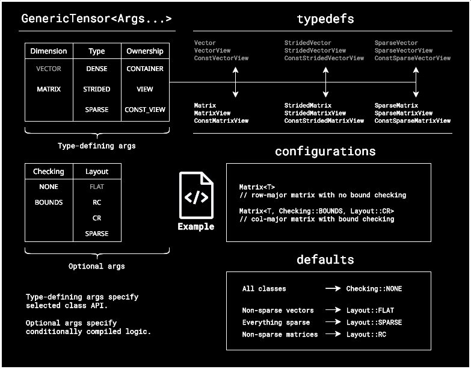

utl::mvl (experimental)¶
utl::mvl (aka Matrix View Library) implements generic classes for dense/strided/sparse vectors, matrices and views.
Unlike most existing matrix implementations, mvl focuses on data-oriented matrices that support arbitrary element types and can be used similarly to std::vector. It's main goal is the simplicity of API and interoperability with most existing implementations.
Important
Due to rather extensive API, seeing usage examples first might be helpful.
Warning
This module is currently experimental. It is generally functional, however there are no guarantees about its API, stability and documentation coverage.
Class structure¶
All vectors, matrices and views in mvl stem from a single generic template class, that can be specialized into any available behavior through its template parameters:
// Generic template
template <
class T,
Dimension dimension,
Type type,
Ownership ownership,
Checking checking,
Layout layout
>
class GenericTensor;
// Example of manual specialization
using IntegerMatrix = GenericTensor<int, Dimension::MATRIX, Type::DENSE, Ownership::CONTAINER, Checking::NONE, Layout::RC>;
Note
Here tensor will be used to refer to arbitrary vectors, matrices and views, not necessarily in a mathematical sense.
This approach provides a generic way of working with matrices that is mostly agnostic to underlying layout and implementation. In practical usage manual specialization is rarely needed due to provided typedefs, however it is a powerful tool for implementing generic APIs.
Below in an overview of all available arguments, typedefs and defaults:

Performance & linear algebra operations¶
mvl classes are intended to be lightweight wrappers that allow convenient data manipulation without any performance tradeoffs on basic operations (loops, indexing, standard algorithms, etc.), this is achieved through conditional compilation and compile-time resolution of all indexing formulas. See benchmarks for details.
Due to its arbitrary-data approach, linear algebra operations are intentionally NOT implemented by mvl. Numeric computation is a separate field and is much better handled by existing libraries like XTensor, Eigen and Blaze. In cases where matrix computation is needed, it's heavily recommended to use matrices provided by those libraries as a main implementation, and whenever mvl functions are needed, those can be wrapped in mvl view. For example:
Eigen::MatrixXd A; // in Eigen col-major by default
// Do some computation with 'A'
mvl::MatrixView<double, Checking::NONE, Layout::CR> view(A.rows(), A.cols(), A.data());
// Use 'view' like any other MVL matrix
Definitions¶
Important
requires tag specifies methods that get conditionally compiled by some specializations.
Important
Callable<Args...> is a shortcut for a template parameter, restricted to callable objects with specific signature.
// Generic template
template <
class T,
Dimension dimension,
Type type,
Ownership ownership,
Checking checking,
Layout layout
>
class GenericTensor {
// - Parameter reflection -
struct params {
constexpr static Dimension dimension
constexpr static Type type;
constexpr static Ownership ownership;
constexpr static Checking checking;
constexpr static Layout layout;
};
// - Member types -
using self = GenericTensor;
using value_type = T;
using size_type = std::size_t;
using difference_type = std::ptrdiff_t;
using reference = T&;
using const_reference = const T&;
using pointer = T*;
using const_pointer = const T*;
using owning_reflection = GenericTensor<value_type, params::dimension, params::type,
Ownership::CONTAINER, params::checking, params::layout>;
// - Iterators -
using iterator;
using reverse_iterator;
using const_iterator;
using const_reverse_iterator;
iterator begin();
iterator end();
reverse_iterator rbegin();
reverse_iterator rend();
const_iterator begin() const;
const_iterator end() const;
const_iterator cbegin() const;
const_iterator cend() const;
const_reverse_iterator rbegin() const;
const_reverse_iterator rend() const;
const_reverse_iterator crbegin() const;
const_reverse_iterator crend() const;
// - Basic getters -
size_type size() const;
size_type rows() const; // requires MATRIX
size_type cols() const; // requires MATRIX
size_type row_stride() const; // requires MATRIX && (DENSE || STRIDED)
size_type col_stride() const; // requires MATRIX && (DENSE || STRIDED)
const_pointer data() const; // requires DENSE || STRIDED
pointer data(); // requires DENSE || STRIDED
bool empty() const;
// - Advanced getters -
bool contains(const_reference value) const; // requires value_type::operator==()
size_type count(const_reference value) const; // requires value_type::operator==()
bool is_sorted() const; // requires value_type::operator<()
bool is_sorted(Callable<bool(const_reference, const_reference)> cmp) const;
std::vector<value_type> to_std_vector() const;
self transposed() const; // requires MATRIX && DENSE
self clone() const; // requires CONTAINER
self move() &; // requires CONTAINER
// - Indexation -
const_reference front() const;
const_reference back() const;
reference front();
reference back();
reference operator[](size_type idx);
reference operator()(size_type i); // [TODO:] requires VECTOR
reference operator()(size_type i, size_type j); // requires MATRIX
const_reference operator[](size_type idx) const;
const_reference operator()(size_type i) const; // [TODO:] requires VECTOR
const_reference operator()(size_type i, size_type j) const; // requires MATRIX
// - Index conversions -
size_type get_idx_of_ij(size_type i, size_type j) const; // requires MATRIX
Index2D get_ij_of_idx(size_type idx) const; // requires MATRIX
bool contains_index(size_type i, size_type j) const; // requires MATRIX && SPARSE
size_type extent_major() const; // requires MATRIX && (DENSE || STRIDED)
size_type extent_minor() const; // requires MATRIX && (DENSE || STRIDED)
// - Reductions -
value_type sum() const; // requires value_type::operator+()
value_type product() const; // requires value_type::operator*()
value_type min() const; // requires value_type::operator<()
value_type max() const; // requires value_type::operator<()
// - Predicate operations -
bool true_for_any(Callable<bool(const_reference)> predicate) const;
bool true_for_any(Callable<bool(const_reference, size_type)> predicate) const; // [TODO:] requires VECTOR
bool true_for_any(Callable<bool(const_reference, size_type, size_type)> predicate) const; // requires MATRIX
bool true_for_all(Callable<bool(const_reference)> predicate) const;
bool true_for_all(Callable<bool(const_reference, size_type)> predicate) const; // [TODO:] requires VECTOR
bool true_for_all(Callable<bool(const_reference, size_type, size_type)> predicate) const; // requires MATRIX
// - Const algorithms -
const self& for_each(Callable<void(const_reference)> func) const;
const self& for_each(Callable<void(const_reference, size_type)> func) const; // [TODO:] requires VECTOR
const self& for_each(Callable<void(const_reference, size_type, size_type)> func) const; // requires MATRIX
// - Mutating algorithms -
self& for_each(Callable<void(reference)> func);
self& for_each(Callable<void(reference, size_type)> func); // [TODO:] requires VECTOR
self& for_each(Callable<void(reference, size_type, size_type)> func); // requires MATRIX
self& transform(Callable<value_type(const_reference)> func);
self& transform(Callable<value_type(const_reference, size_type)> func); // [TODO:] requires VECTOR
self& transform(Callable<value_type(const_reference, size_type, size_type)> func); // requires MATRIX
self& fill(const_reference value);
self& fill(Callable<value_type()> func);
self& fill(Callable<value_type(), size_type> func); // [TODO:] requires VECTOR
self& fill(Callable<value_type(), size_type, size_type> func); // requires MATRIX
self& sort(); // requires value_type::operator<()
self& stable_sort(); // requires value_type::operator<()
self& sort(Callable<bool(const_reference, const_reference)> cmp);
self& stable_sort(Callable<bool(const_reference, const_reference)> cmp);
// - Block Subviews -
using block_view_type;
using block_const_view_type;
block_view_type block(size_type i, size_type j, size_type rows, size_type cols); // requires MATRIX
block_const_view_type block(size_type i, size_type j, size_type rows, size_type cols) const; // requires MATRIX
block_view_type row(); // requires MATRIX
block_const_view_type row() const; // requires MATRIX
block_view_type col(); // requires MATRIX
block_const_view_type col() const; // requires MATRIX
// - Sparse Subviews -
using sparse_view_type;
using sparse_const_view_type;
sparse_view_type filter(Callable<bool(const_reference)> predicate);
sparse_view_type filter(Callable<bool(const_reference, size_type)> predicate); // [TODO:] requires VECTOR
sparse_view_type filter(Callable<bool(const_reference, size_type, size_type)> predicate); // requires MATRIX
sparse_const_view_type filter(Callable<bool(const_reference)> predicate) const;
sparse_const_view_type filter(Callable<bool(const_reference, size_type)> predicate) const; // [TODO:] requires VECTOR
sparse_const_view_type filter(Callable<bool(const_reference, size_type, size_type)> predicate) const; // requires MATRIX
sparse_view_type diagonal(); // requires MATRIX
sparse_const_view_type diagonal() const; // requires MATRIX
// - Sparse operations - (requires SPARSE)
using sparse_entry_type;
self& rewrite_triplets( std::vector<triplet_type>&& triplets); // requires MATRIX
self& insert_triplets(const std::vector<triplet_type>& triplets); // requires MATRIX
self& erase_triplets( std::vector<Index2D > indices ); // requires MATRIX
// - Constructors -
// Note: Lots of entries in this section,
// following full documentation looks more digestible
// Default
GenericTensor(); // requires CONTAINER
// Copy/move
GenericTensor( const self& other);
GenericTensor( self&& other);
self& operator=(const self& other);
self& operator=( self&& other);
// Copy over template parameter boundaries
template <Type other_type, Ownership other_ownership, Checking other_checking, Layout other_layout>
GenericTensor( const GenericTensor<...>& other);
template <Type other_type, Ownership other_ownership, Checking other_checking, Layout other_layout>
self& operator=(const GenericTensor<...>& other);
// Move over template parameter boundaries
template <Checking other_checking>
GenericTensor( GenericTensor<...>&& other);
template <Checking other_checking>
self& operator=(GenericTensor<...>&& other);
// 'Matrix' ctors (requires MATRIX && DENSE && CONTAINER)
explicit GenericTensor(size_type rows, size_type cols, const_reference value = value_type());
explicit GenericTensor(size_type rows, size_type cols, Callable<value_type(size_type, size_type)> init_func);
explicit GenericTensor(size_type rows, size_type cols, pointer data_ptr);
GenericTensor(std::initializer_list<std::initializer_list<value_type>> init_list);
// 'MatrixView' ctors (requires MATRIX && DENSE && VIEW)
explicit GenericTensor(size_type rows, size_type cols, pointer data_ptr);
template<Ownership other_ownership, Checking other_checking, Layout other_layout>
GenericTensor(const GenericTensor<...>& other);
// 'ConstMatrixView' ctors (requires MATRIX && DENSE && CONST_VIEW)
explicit GenericTensor(size_type rows, size_type cols, const_pointer data_ptr);
template<Ownership other_ownership, Checking other_checking, Layout other_layout>
GenericTensor(const GenericTensor<...>& other);
// 'StridedMatrix' ctors (requires MATRIX && DENSE && CONTAINER)
explicit GenericTensor(size_type rows, size_type cols, size_type row_stride, size_type col_stride,const_reference value = value_type());
explicit GenericTensor(size_type rows, size_type cols, size_type row_stride, size_type col_stride, Callable<value_type(size_type, size_type)> init_func);
explicit GenericTensor(size_type rows, size_type cols, size_type row_stride, size_type col_stride, pointer data_ptr);
GenericTensor(std::initializer_list<std::initializer_list<value_type>> init_list, size_type row_stride, size_type col_stride);
// 'StridedMatrixView' ctors (requires MATRIX && DENSE && VIEW)
explicit GenericTensor(size_type rows, size_type cols, size_type row_stride, size_type col_stride, pointer data_ptr);
template<Ownership other_ownership, Checking other_checking, Layout other_layout>
GenericTensor(const GenericTensor<...>& other);
// 'ConstStridedMatrixView' ctors (requires MATRIX && DENSE && CONST_VIEW)
explicit GenericTensor(size_type rows, size_type cols, size_type row_stride, size_type col_stride, const_pointer data_ptr);
template<Ownership other_ownership, Checking other_checking, Layout other_layout>
GenericTensor(const GenericTensor<...>& other);
// Sparse ctors (requires MATRIX && DENSE)
explicit GenericTensor(size_type rows, size_type cols, const std::vector<triplet_type>& data);
explicit GenericTensor(size_type rows, size_type cols, std::vector<triplet_type>&& data);
};
// - Tensor IO formats -
namespace format {
// Human-readable formats
std::string as_vector( const GenericTensor<Args...> &tensor);
std::string as_matrix( const GenericTensor<Args...> &tensor);
std::string as_dictionary(const GenericTensor<Args...> &tensor);
// Export formats
std::string as_raw_text( const GenericTensor<Args...> &tensor);
std::string as_json_array(const GenericTensor<Args...> &tensor);
}
// - Linear algebra operators -
// Note:: In all operators below 'owning_reflection' is a shortcut for 'typename std::decay<L>::owning_reflection'
// Unary operators
template <class L> owning_reflection operator+(L&& left);
template <class L> owning_reflection operator-(L&& left);
template <class L, class Op> owning_reflection apply_unary_op(L&& left, Op&& op);
// Binary operators
template <class L, class R> owning_reflection operator+(L&& left, R&& right);
template <class L, class R> owning_reflection operator-(L&& left, R&& right);
template <class L, class R> owning_reflection elementwise_product(L&& left, R&& right);
template <class L, class R> owning_reflection operator*(const L& left, const R& right);
template <class L, class R, class Op> owning_reflection apply_binary_op(L&& left, R&& right, Op&& op);
// Augmented assignment operators
template <class L, class R> L& operator+=(L&& left, R&& right);
template <class L, class R> L& operator-=(L&& left, R&& right);
// - Typedefs -
template <typename T, Checking checking = Checking::NONE, Layout layout = Layout::RC>
using Matrix = GenericTensor<T, Dimension::MATRIX, Type::DENSE, Ownership::CONTAINER, checking, layout>;
template <typename T, Checking checking = Checking::NONE, Layout layout = Layout::RC>
using MatrixView = GenericTensor<T, Dimension::MATRIX, Type::DENSE, Ownership::VIEW, checking, layout>;
template <typename T, Checking checking = Checking::NONE, Layout layout = Layout::RC>
using ConstMatrixView = GenericTensor<T, Dimension::MATRIX, Type::DENSE, Ownership::CONST_VIEW, checking, layout>;
template <typename T, Checking checking = Checking::NONE, Layout layout = Layout::RC>
using StridedMatrix = GenericTensor<T, Dimension::MATRIX, Type::STRIDED, Ownership::CONTAINER, checking, layout>;
template <typename T, Checking checking = Checking::NONE, Layout layout = Layout::RC>
using StridedMatrixView = GenericTensor<T, Dimension::MATRIX, Type::STRIDED, Ownership::VIEW, checking, layout>;
template <typename T, Checking checking = Checking::NONE, Layout layout = Layout::RC>
using ConstStridedMatrixView = GenericTensor<T, Dimension::MATRIX, Type::STRIDED, Ownership::CONST_VIEW, checking, layout>;
template <typename T, Checking checking = Checking::NONE>
using SparseMatrix = GenericTensor<T, Dimension::MATRIX, Type::SPARSE, Ownership::CONTAINER, checking, Layout::SPARSE>;
template <typename T, Checking checking = Checking::NONE>
using SparseMatrixView = GenericTensor<T, Dimension::MATRIX, Type::SPARSE, Ownership::VIEW, checking, Layout::SPARSE>;
template <typename T, Checking checking = Checking::NONE>
using ConstSparseMatrixView = GenericTensor<T, Dimension::MATRIX, Type::SPARSE, Ownership::CONST_VIEW, checking, Layout::SPARSE>;
Note
noexcept specifiers are omitted in this section to reduce verbosity.
Note
From now on mvl::GenericTensor:: will be omitted for the same reason.
Methods¶
Parameter reflection¶
struct params { constexpr static Dimension dimension constexpr static Type type; constexpr static Ownership ownership; constexpr static Checking checking; constexpr static Layout layout; };
Compile-time reflection of template parameters defining current GenericTensor.
Useful for implementing templates over tensor types and conditional compilation (for example, template over TensorType can use if constexpr (TensorType::params::dimension == Dimension::MATRIX) {} to conditionally enable logic for matrices).
Member types¶
using self = GenericTensor; using value_type = T; using size_type = std::size_t; using difference_type = std::ptrdiff_t; using reference = T&; using const_reference = const T&; using pointer = T*; using const_pointer = const T*;
A set of member types analogous to member types of std::vector.
using owning_reflection = GenericTensor<value_type, params::dimension, params::type, Ownership::CONTAINER, params::checking, params::layout>;
Reflection of the tensor type with ownership set to CONTAINER.
This is a return type of most algebraic operators, for example, addition MatrixView<T> + MatrixView<T> logically produces a Matrix<T>. See the table below for reference:
GenericTensor |
GenericTensor::owning_reflection |
|---|---|
Matrix<T> or MatrixView<T> or ConstMatrixView<T> |
Matrix<T> |
StridedMatrix<T> or StridedMatrixView<T> or ConstStridedMatrixView<T> |
StridedMatrix<T> |
SparseMatrix<T> or SparseMatrixView<T> or ConstSparseMatrixView<T> |
SparseMatrix<T> |
Iterators¶
using iterator; using reverse_iterator; using const_iterator; using const_reverse_iterator; iterator begin(); iterator end(); reverse_iterator rbegin(); reverse_iterator rend(); const_iterator begin() const; const_iterator end() const; const_iterator cbegin() const; const_iterator cend() const; const_reverse_iterator rbegin() const; const_reverse_iterator rend() const; const_reverse_iterator crbegin() const; const_reverse_iterator crend() const;
Iterators for 1D iteration over the underlying array. API and functionality is exactly the same as the one provided by std::vector iterators.
Basic getters¶
size_type size() const;
Returns the number of elements stored by the tensor. Size of the underlying array.
Note: While size() == rows() * cols() is a valid assumption for dense matrices, the same cannot be said about the sparse case.
size_type rows() const; // requires MATRIX size_type cols() const; // requires MATRIX
Returns number of rows/columns in the matrix.
size_type row_stride() const; // requires MATRIX && (DENSE || STRIDED) size_type col_stride() const; // requires MATRIX && (DENSE || STRIDED)
Returns strides of the matrix.
Note 1: Most linear algebra libraries use only one stride per matrix. In context of the Layout::RC that "conventional" stride will correspond to col_stride(). row_stride() denotes the number of elements which get "skipped" by indexing after the end of each row. Using two strides like this gives us a more general way of viewing into data, particularly in regard to blocking.
Note 2: Dense non-strided matrices return trivial strides to accommodate API's that can work with both dense and strided inputs. There is no overhead from using actual unit-strides. What constitutes as "trivial strides" can be seen in the table below:
| Matrix type | Layout | Trivial row_stride() / col_stride() |
|---|---|---|
DENSE |
RC |
0 / 1 |
DENSE |
CR |
1 / 0 |
const_pointer data() const; // requires DENSE || STRIDED pointer data(); // requires DENSE || STRIDED
Returns the pointer to the underlying array.
bool empty() const;
Returns whether there are any elements stored in the tensor.
Advanced getters¶
bool contains(const_reference value) const; // requires value_type::operator==()
Returns whether matrix contains element equal to value.
size_type count(const_reference value) const; // requires value_type::operator==()
Returns number of matrix elements equal tovalue.
bool is_sorted() const; // requires value_type::operator<() bool is_sorted(Callable<bool(const_reference, const_reference)> cmp) const;
Returns whether the underlying array is sorted. Uses operator< to perform comparison by default, callable cmp can be passed to use a custom comparison instead.
std::vector<value_type> to_std_vector() const;
Returns a copy of the underlying array as std::vector.
self transposed() const; // requires MATRIX && DENSE
Returns transpose of the matrix.
self clone() const; // requires CONTAINER
Returns a copy of the tensor.
Useful when chaining mutating operations on a tensor with intent of saving the result to a new variable without modifying the original tensor. For example, auto s = tensor.clone().transform(f).sum() will apply function f to the tensor and sum the elements into s without modifying the original tensor.
self move() &; // requires CONTAINER
Returns std::move(*this). This is useful to avoid a copy when initializing objects with method chaining.
See corresponding example.
Indexation¶
const_reference front() const; const_reference back() const; reference front(); reference back();
Returns first/last element from the underlying 1D representation of the tensor.
reference operator[](size_type idx); const_reference operator[](size_type idx) const;
Returns element number idx from the underlying 1D representation of the tensor.
reference operator()(size_type i); // requires VECTOR const_reference operator()(size_type i) const; // requires VECTOR reference operator()(size_type i, size_type j); // requires MATRIX const_reference operator()(size_type i, size_type j) const; // requires MATRIX
Returns element i (for vectors) or element (i, j) (for matrices) according to a logical index.
Note: operator() is a default way of indexing tensors and should be used in vast majority of cases, the main purpose of operator[] is to allow efficient looping over the underlying data when uniform transforms are applied. It is a good idea to prefer operator() even for 1D vectors since in some cases (like sparse vectors) logical index i may not be the same as "in-memory index" idx.
Index conversions¶
size_type get_idx_of_ij(size_type i, size_type j) const; // requires MATRIX Index2D get_ij_of_idx(size_type idx) const; // requires MATRIX
Conversion between the underlying index idx and logical index (i, j) for matrices.
bool contains_index(size_type i, size_type j) const; // requires MATRIX && SPARSE
Returns whether sparse matrix contains an element with a given index.
size_type extent_major() const; // requires MATRIX && (DENSE || STRIDED) size_type extent_minor() const; // requires MATRIX && (DENSE || STRIDED)
Returns dense matrix extents according to a memory layout. For example: with a row-major layout (aka Layout::RC) extent_major() will return the number of rows and extent_minor() will return the number of columns.
This is useful for creating generic logic for different layouts.
Reductions¶
value_type sum() const; // requires value_type::operator+() value_type product() const; // requires value_type::operator*() value_type min() const; // requires value_type::operator<() value_type max() const; // requires value_type::operator<()
Reduces matrix over a binary operation +, *, min or max.
Particularly useful in combination with subviews.
Predicate operations¶
bool true_for_any(Callable<bool(const_reference)> predicate) const; bool true_for_any(Callable<bool(const_reference, size_type)> predicate) const; // requires VECTOR bool true_for_any(Callable<bool(const_reference, size_type, size_type)> predicate) const; // requires MATRIX
Returns whether predicate evaluates to true for any elements in the tensor.
Overloads (2) and (3) allow predicates to also take element index into condition.
bool true_for_all(Callable<bool(const_reference)> predicate) const; bool true_for_all(Callable<bool(const_reference, size_type)> predicate) const; // requires VECTOR bool true_for_all(Callable<bool(const_reference, size_type, size_type)> predicate) const; // requires MATRIX
Returns whether predicate evaluates to true for all elements in the tensor.
Overloads (2) and (3) allow predicates to also take element index into condition.
Const algorithms¶
const self& for_each(Callable<void(const_reference)> func) const; const self& for_each(Callable<void(const_reference, size_type)> func) const; // requires VECTOR const self& for_each(Callable<void(const_reference, size_type, size_type)> func) const; // requires MATRIX
Invokes non-mutating func for all elements in the tensor.
Overloads (2) and (3) allow func to also use element index as an argument.
Mutating algorithms¶
self& for_each(Callable<void(reference)> func); self& for_each(Callable<void(reference, size_type)> func); // requires VECTOR self& for_each(Callable<void(reference, size_type, size_type)> func); // requires MATRIX
Invokes mutating func for all elements in the tensor.
Overloads (2) and (3) allow func to also use element index as an argument.
self& transform(Callable<value_type(const_reference)> func); self& transform(Callable<value_type(const_reference, size_type)> func); // requires VECTOR self& transform(Callable<value_type(const_reference, size_type, size_type)> func); // requires MATRIX
Set element to func(element) for all element of the tensor.
Overloads (2) and (3) allow func to also use element index as an argument.
self& fill(const_reference value);
Sets all elements of the tensor to value.
self& fill(Callable<value_type()> func); self& fill(Callable<value_type(), size_type> func); // requires VECTOR self& fill(Callable<value_type(), size_type, size_type> func); // requires MATRIX
Sets all elements of the tensor to a value returned by func().
Overloads (2) and (3) allow func to also use element index as an argument.
self& sort(); // requires value_type::operator<() self& stable_sort(); // requires value_type::operator<() self& sort(Callable<bool(const_reference, const_reference)> cmp); self& stable_sort(Callable<bool(const_reference, const_reference)> cmp);
Sorts elements of the underlying array according to operator< or a custom comparison cmp.
stable_sort() uses stable sorting algorithms to maintain the relative order of entries with equal values, however it may come at a cost of some performance (specifics depend on a compiler implementation).
Block subviews¶
using block_view_type; using block_const_view_type;
Types returned by blocking subview methods of the tensor.
Dense and strided matrices will use appropriately strided views to efficiently represent blocking, while sparse matrices returns sparse views.
All subviews inherit T, Dimension and Checking configuration from the parent.
block_view_type block(size_type i, size_type j, size_type rows, size_type cols); // requires MATRIX block_const_view_type block(size_type i, size_type j, size_type rows, size_type cols) const; // requires MATRIX
Returns block subview starting at (i, j) with size rows x cols.
block_view_type row(size_type i); // requires MATRIX block_const_view_type row(size_type i) const; // requires MATRIX
Returns block subview corresponding to the i-th row.
block_view_type col(size_type j); // requires MATRIX block_const_view_type col(size_type j) const; // requires MATRIX
Returns block subview corresponding to the j-th column.
Sparse subviews¶
using sparse_view_type; using sparse_const_view_type;
Types returned by sparse subview methods of the tensor.
Evaluate to appropriate sparse tensor views that inherits T, Dimension and Checking configuration from the parent.
sparse_view_type filter(Callable<bool(const_reference)> predicate); sparse_view_type filter(Callable<bool(const_reference, size_type)> predicate); // requires VECTOR sparse_view_type filter(Callable<bool(const_reference, size_type, size_type)> predicate); // requires MATRIX
Returns a sparse view to all elements satisfying the predicate.
Overloads (2) and (3) allow predicates to also take element index into condition.
sparse_const_view_type filter(Callable<bool(const_reference)> predicate) const; sparse_const_view_type filter(Callable<bool(const_reference, size_type)> predicate) const; // requires VECTOR sparse_const_view_type filter(Callable<bool(const_reference, size_type, size_type)> predicate) const; // requires MATRIX
const version of the previous method.
sparse_view_type diagonal(); // requires MATRIX sparse_const_view_type diagonal() const; // requires MATRIX
Returns sparse view to a matrix diagonal.
Sparse operations¶
using sparse_entry_type; // requires SPARSE
index + value entry type corresponding to a sparse tensor (aka pairs for vector and triplets for matrices). Such entries are used to initialize and fill sparse matrices with values (similarly to the vast majority of other sparse matrix implementation).
A table of appropriate sparse entry types can be seen below:
| Tensor dimension | Ownership | Value of sparse_entry_type |
|---|---|---|
VECTOR |
CONTAINER |
SparseEntry1D<value_type>> |
VECTOR |
VIEW |
SparseEntry1D<std::reference_wrapper<value_type>> |
VECTOR |
CONST_VIEW |
SparseEntry1D<std::reference_wrapper<const value_type>> |
MATRIX |
CONTAINER |
SparseEntry2D<value_type>> |
MATRIX |
VIEW |
SparseEntry2D<std::reference_wrapper<value_type>> |
MATRIX |
CONST_VIEW |
SparseEntry2D<std::reference_wrapper<const value_type>> |
self& rewrite_triplets(std::vector<triplet_type>&& triplets); // requires MATRIX && SPARSE
Replaces all existing entries in the sparse matrix with given triplets.
self& insert_triplets(const std::vector<triplet_type>& triplets); // requires MATRIX && SPARSE
Inserts given triplets into a sparse matrix.
self& erase_triplets(std::vector<Index2D> indices ); // requires MATRIX && SPARSE
Erases entries with given indices from the sparse matrix.
Linear algebra operators¶
Unary operators¶
// Unary operators template <class L> owning_reflection operator+(L&& left); template <class L> owning_reflection operator-(L&& left);
Returns the result of applying unary operator + or - to all elements of the tensor left.
Operators are only compiled if value_type of the tensor supports a corresponding unary operator.
Note: Here and in all other methods of this section owning_reflection is a shortcut name for typename std::decay<L>::owning_reflection. This type represents the fact that while we can perform algebraic operations on matrix views, the resulting matrix will be a proper "owning" one.
template <class L, class Op> owning_reflection apply_unary_op(L&& left, Op&& op);
A generic function for applying unary operator op to all elements of the tensor left.
Binary operators¶
// Binary operators template <class L, class R> owning_reflection operator+(L&& left, R&& right); template <class L, class R> owning_reflection operator-(L&& left, R&& right); template <class L, class R> owning_reflection elementwise_product(L&& left, R&& right);
Returns the result of applying binary operator +, - or * to all pairs of elements in left and right tensors.
Operators are only compiled if value_type of both tensors is the same and supports a corresponding binary operator.
Note 1: Both binary and unary operators will reuse r-value arguments to avoid allocations if possible. This means that a long chain of operators like A + B + C - (-D) will usually only allocate once and then propagate that temporary throughout the chain, only computing the actual operations.
Note 2: All operators are aware of matrix sparsity and will select appropriate implementations. Implementations have following time complexities:
Type of L |
Type of R |
Element-wise binary operator complexity |
|---|---|---|
DENSE or STRIDED |
DENSE or STRIDED |
\(O(N^2)\) |
DENSE or STRIDED |
SPARSE |
\(O(N)\) |
SPARSE |
DENSE or STRIDED |
\(O(N)\) |
SPARSE |
SPARSE |
\(O(N)\) |
template <class L, class R, class Op> owning_reflection apply_binary_op(L&& left, R&& right, Op&& op);
A generic function for applying binary operator op to all elements of the tensor left.
template <class L, class R> owning_reflection operator*(const L& left, const R& right);
Returns the matrix product \(c_{ij} = \sum_{k = 1}^{N} a_{ik} b_{kj}\).
Operator is only compiled if value_type of both tensors is the same and supports operators += and *.
Note 1: Matrix product is aware of matrix memory layout and will select the appropriate iteration order. Loop tiling is used to improve cache efficiency at large sizes. It should be noted however that mvl is not a linear algebra library at its core and will be significantly outperformed by dedicated BLAS routines in the task of number crunching.
Note 2: Matrix product is aware of matrix sparsity and will select appropriate implementations. Implementations have following time complexities:
Type of L |
Type of R |
Matrix product complexity |
|---|---|---|
DENSE or STRIDED |
DENSE or STRIDED |
\(O(N^3)\) |
DENSE or STRIDED |
SPARSE |
\(O(N^2)\) |
SPARSE |
DENSE or STRIDED |
\(O(N^2)\) |
SPARSE |
SPARSE |
\(O(N)\) |
Augmented assignment operators¶
```cpp // Augmented assignment operators template
L& operator+=(L&& left, R&& right); template L& operator-=(L&& left, R&& right);
TODO: This behavior is not yet finalized, there are still some considerations to make.
Tensor IO formats¶
// Human-readable formats std::string mvl::format::as_vector( const GenericTensor<...> &tensor); std::string mvl::format::as_matrix( const GenericTensor<...> &tensor); std::string mvl::format::as_dictionary(const GenericTensor<...> &tensor); // Export formats std::string mvl::format::as_raw_text( const GenericTensor<...> &tensor); std::string mvl::format::as_json_array(const GenericTensor<...> &tensor);
Converts tensor to string, formatted according to a chosen schema. All formats accept arbitrary tensors and properly handle sparse matrices.
| Method | Output |
|---|---|
as_vector |
Human-readable format. Formats tensor as a flat array of values. |
as_matrix |
Human-readable format. Formats tensor as a 1- or 2-D matrix. Missing sparse matrix entries are marked with -. |
as_dictionary |
Human-readable format. Formats tensor as a list of key-value pairs. Useful for sparse matrices. |
as_raw_text |
Export format. Formats tensor as a raw data separated by spaces and newlines (in case of matrices). |
as_json_array |
Export format. Formats tensor as a 1- or 2-D JSON array. |
See corresponding example to get a better idea of what each output looks like.
Note 1: Stringification works for any type with an existing operator<<(std::ostream&, const T&) overload.
Note 2: as_json_array assumes that operator<<(std::ostream&, const T&) produces a string, corresponding to a valid JSON object. By default, mvl knows how to properly handle all built-in numeric, logical and string types, user-defined types have to handle their formatting themselves.
Note 3: Human-readable formats automatically collapse matrices above a certain "readable" size (70+ rows or 40+ columns for as_matrix, 500+ elements for as_vector and as_dictionary).
Constructors¶
Generic constructors¶
GenericTensor(); // requires CONTAINER
Default-initializes an empty tensor. Only provided for containers, since views cannot exist without a target to view into.
GenericTensor( const self& other);
GenericTensor( self&& other);
self& operator=(const self& other);
self& operator=( self&& other);
Copy/move constructors and assignment operators for tensors of the same type.
template <Type other_type, Ownership other_ownership, Checking other_checking, Layout other_layout>
GenericTensor( const GenericTensor<...>& other);
template <Type other_type, Ownership other_ownership, Checking other_checking, Layout other_layout>
self& operator=(const GenericTensor<...>& other);
Converting copy constructor/assignment operator for tensors that have different types.
Copy-conversion freely converts over the boundaries of type, ownership, checking and layout. It may use non-trivial logic to perform a "logical copy" for matrices with different APIs, such as, for example, convert sparse matrix to dense by cloning all the sparse contents and setting the other elements to default value, or, for example, construct sparse matrix from dense by filtering out all default-initialized elements and using the remainder as sparse contents (see an example of working with sparse matrices).
template <Checking other_checking>
GenericTensor( GenericTensor<...>&& other);
template <Checking other_checking>
self& operator=(GenericTensor<...>&& other);
Converting move constructor/assignment operator for tensors that have different types, yet can logically be converted to each other.
Note that move-conversion is more restricting than copy-conversion due to move-semantics requiring both matrices to have a compatible memory layout of .
Matrix constructors¶
explicit GenericTensor(size_type rows, size_type cols, const_reference value = value_type());
Constructs a rows by cols matrix with elements initialized to value.
explicit GenericTensor(size_type rows, size_type cols, Callable<value_type(size_type, size_type)> init_func);
Constructs a rows by cols matrix with elements initialized to init_func(i, j).
explicit GenericTensor(size_type rows, size_type cols, pointer data_ptr);
Takes ownership of C array data_ptr and constructs a rows by cols matrix over it.
GenericTensor(std::initializer_list<std::initializer_list<value_type>> init_list);
Constructs matrix from a braced list: { { ... }, ... , { ... } }.
MatrixView constructors¶
explicit GenericTensor(size_type rows, size_type cols, pointer data_ptr);
Constructs a rows by cols matrix view into the data stored at data_ptr.
template<Ownership other_ownership, Checking other_checking, Layout other_layout>
GenericTensor(const GenericTensor<...>& other);
Constructs a matrix view into another dense mvl matrix.
ConstMatrixView constructors¶
explicit GenericTensor(size_type rows, size_type cols, const_pointer data_ptr);
Constructs a rows by cols const matrix view into the data stored at data_ptr.
template<Ownership other_ownership, Checking other_checking, Layout other_layout>
GenericTensor(const GenericTensor<...>& other);
Constructs a const matrix view into another dense mvl matrix.
StridedMatrix constructors¶
explicit GenericTensor(size_type rows, size_type cols, size_type row_stride, size_type col_stride, const_reference value = value_type());
Constructs a rows by cols matrix with given strides and all elements initialized to value.
Note 1: See "Basic getters" section to learn how row- and col- strides work in mvl.
Note 2: Strides are usually used in the context of views. In case of an owning matrix strides function as an additional padding between elements, while rarely directly useful, in some cases it can be used to reduce cache misses caused by a particularly "unlucky" alignment of rows relative to a cache size.
explicit GenericTensor(size_type rows, size_type cols, size_type row_stride, size_type col_stride, Callable<value_type(size_type, size_type)> init_func);
Constructs a rows by cols matrix with given strides and all elements initialized to init_func(i, j).
explicit GenericTensor(size_type rows, size_type cols, size_type row_stride, size_type col_stride, pointer data_ptr);
StridedMatrixView constructors¶
explicit GenericTensor(size_type rows, size_type cols, size_type row_stride, size_type col_stride, pointer data_ptr);
Constructs a rows by cols strided matrix view into the data stored at data_ptr.
template<Ownership other_ownership, Checking other_checking, Layout other_layout>
GenericTensor(const GenericTensor<...>& other);
Constructs a strided matrix view into another strided mvl matrix.
ConstStridedMatrixView constructors¶
explicit GenericTensor(size_type rows, size_type cols, size_type row_stride, size_type col_stride, const_pointer data_ptr);
Constructs a rows by cols const strided matrix view into the data stored at data_ptr.
template<Ownership other_ownership, Checking other_checking, Layout other_layout>
GenericTensor(const GenericTensor<...>& other);
Constructs a const strided matrix view into another strided mvl matrix.
SparseMatrix constructors¶
// pass triplets by copy
explicit GenericTensor(size_type rows, size_type cols, const std::vector<sparse_entry_type>& data);
// pass triplets with move-semantics
explicit GenericTensor(size_type rows, size_type cols, std::vector<sparse_entry_type>&& data);
Constructs a rows by cols sparse matrix from a list of { i, j, value } triplets.
If triplets aren't intended to be reused, they can be passed with std::move() for a faster construction.
These constructors are valid for both owning sparse matrices and views, with the only difference being the expected sparse_entry_type (note that this is a member type of the tensor class, it can always be used directly as provided). Below is the table detailing possible triplet types for each ownership:
| Ownership | Value of sparse_entry_type |
|---|---|
CONTAINER |
SparseEntry2D<value_type> |
VIEW |
SparseEntry2D<std::reference_wrapper<value_type>> |
CONST_VIEW |
SparseEntry2D<std::reference_wrapper<const value_type>> |
Here mvl::SparseEntry2D<T> is a simple POD struct:
template <typename T>
struct SparseEntry2D {
size_t i;
size_t j;
T value;
};
Examples¶
Declaring and indexing a matrix¶
using namespace utl;
// Declare regular dense matrix
mvl::Matrix<int> A = {
{ 1, 2, 3 },
{ 4, 5, 6 }
};
// 2D indexation
assert( A(0, 1) == 2 );
// 1D indexation
assert( A[2] == 3 );
// Range-based loops
for (const auto &element : A) assert( element > 0 );
// std::vector-like API & iterators
assert( A.front() == 1 );
assert( A.back() == 6 );
assert( *A.cbegin() == 1 );
assert( *(A.cend() - 1) == 6 );
// Basic getters
assert( A.rows() == 2 );
assert( A.cols() == 3 );
assert( A.size() == 6 );
assert( A.empty() == false );
// Declare matrix with enabled bound-checking
mvl::Matrix<int, mvl::Checking::BOUNDS> B = A;
// B(3, 2) = 1; // will throw with a message "i (which is 3) >= this->rows() (which is 2)"
IO formats¶
using namespace utl;
// Create sparse matrix from triplets
mvl::SparseMatrix<double> mat(3, 4,
{
{0, 0, 3.14 },
{0, 1, 4.24 },
{1, 1, 7.15 },
{2, 2, 2.38 },
{2, 3, 734.835 }
});
// Showcase different IO formats
std::cout
// Human-readable formats
<< "\n## as_vector() ##\n\n" << mvl::format::as_vector( mat)
<< "\n## as_matrix() ##\n\n" << mvl::format::as_matrix( mat)
<< "\n## as_dictionary() ##\n\n" << mvl::format::as_dictionary(mat)
// Export formats
<< "\n## as_raw_text() ##\n\n" << mvl::format::as_raw_text( mat)
<< "\n## as_json_array() ##\n\n" << mvl::format::as_json_array(mat);
// Human-readable formats will automatically collapse matrices above certain size to following format:
// > Tensor [size = 250000] (500 x 500):
// > <hidden due to large size>
Output:
## as_vector() ##
Tensor [size = 5] (3 x 4):
{ 3.14, 4.24, 7.15, 2.38, 734.835 }
## as_matrix() ##
Tensor [size = 5] (3 x 4):
[ 3.14 4.24 - - ]
[ - 7.15 - - ]
[ - - 2.38 734.835 ]
## as_dictionary() ##
Tensor [size = 5] (3 x 4):
(0, 0) = 3.14
(0, 1) = 4.24
(1, 1) = 7.15
(2, 2) = 2.38
(2, 3) = 734.835
## as_raw_text() ##
3.14 4.24 0 0
0 7.15 0 0
0 0 2.38 734.835
## as_json_array() ##
[
[ 3.14, 4.24, 0, 0 ],
[ 0, 7.15, 0, 0 ],
[ 0, 0, 2.38, 734.835 ]
]
Initializing a matrix by chaining operations¶
using namespace utl;
std::random_device rd;
std::default_random_engine gen(rd());
std::normal_distribution dist(0., 1.);
const auto rand_value = [&]() { return dist(gen); };
const auto abs = [&](double x){ return std::abs(x); };
// Build 5x5 matrix where {a_ij} = |N(0, 1)|
// '.move()' avoids a copy when assigning 'A'
auto A = mvl::Matrix<double>(5, 5).fill(rand_value).transform(abs).move();
std::cout << mvl::format::as_matrix(A);
Output:
Tensor [size = 25] (5 x 5):
[ 0.592525 0.378606 1.94445 0.724242 0.0230773 ]
[ 0.854804 0.578115 2.33575 1.10363 1.24067 ]
[ 0.731419 0.870693 0.681755 0.446197 0.136237 ]
[ 0.889649 1.84099 1.17115 0.45199 0.506486 ]
[ 0.915286 0.287618 0.638074 0.489174 1.1951 ]
Wrapping external data into views¶
using namespace utl;
// Some raw data
// (for example, received from an external 'C' library)
// (let's also assume it's immutable and uses col-major layout for added challenge)
const float data[] = { 1.f, 2.f, 3.f, 4.f, 5.f, 6.f };
const size_t rows = 2;
const size_t cols = 3;
// Wrap data into MVL view and use it as a regular matrix
mvl::ConstMatrixView<float, mvl::Checking::NONE, mvl::Layout::CR> A(
rows, cols, data
);
// This makes MVL easily compatible with almost every 3rd party
// matrix library, views merely wrap around external data and expose
// MVL matrix functionality with no copying/conversion overhead
Usage with utl::math¶
using namespace utl;
// Create 7x7 identity matrix
auto A = mvl::Matrix<double>(7, 7, math::kronecker_delta<size_t>);
// Compute ||A||_inf norm
const auto norm = A.clone().transform(math::abs<double>).sum();
// Compute tr(A)
const auto tr = A.diagonal().sum();
// Split matrix into block views
auto upper_half = A.block(0, 0, 0, A.size() / 2 - 1 );
auto lower_half = A.block(0, 0, A.size() / 2, A.size() - 1 );
// Set diagonal to { 1, 2, 3, ... , N }
A.diagonal().for_each([](double &elem, size_t i, size_t){ elem = i + 1; });
// Evenly mesh [0, PI] x [0, 2 PI] with 100 intervals on each side
// and save the 2D grid as a matrix
using vertex_t = std::pair<double, double>;
auto x = math::linspace(0., math::PI, math::Intervals(100));
auto y = math::linspace(0., math::PI_TWO, math::Intervals(100));
auto grid = mvl::Matrix<vertex_t>(x.size(), y.size(), [&](size_t i, size_t j){ return vertex_t{ x[i], y[j] }; });
Working with images¶
using namespace utl;
// Raw image RGB data
// (outputted by most image decoders)
const uint8_t* data = { /* ... */ };
const size_t channels = 3;
const size_t w = 300;
const size_t h = 200;
// View into R-G-B channels of an image as individual matrices
mvl::ConstStridedMatrixView<uint8_t> R(w, h, 0, channels, data + 0);
mvl::ConstStridedMatrixView<uint8_t> G(w, h, 0, channels, data + 1);
mvl::ConstStridedMatrixView<uint8_t> B(w, h, 0, channels, data + 2);
// Convert image to grayscale using linear formula
mvl::Matrix<uint8_t> grayscale(w, h, [&](size_t i, size_t j){
return 0.2126 * R(i, j) + 0.7152 * G(i, j) + 0.0722 * B(i, j);
});
Working with sparse matrices¶
using namespace utl;
// Create sparse matrix from triplets
mvl::SparseMatrix<int> A(3, 3, {
{0, 0, 1},
{1, 1, 2},
{2, 2, 3}
});
// Check that sparse matrix contains an element
assert( A.contains_index(1, 1) == true );
assert( A.contains_index(1, 2) == false );
// Convert sparse matrix to dense
mvl::Matrix<int> dense_A = A;
// Convert dense matrix to sparse
mvl::SparseMatrix<int> sparse_A = dense_A;
std::cout
<< "\n## A (sparse) ##\n\n" << mvl::format::as_matrix( A)
<< "\n## A (sparse converted to dense) ##\n\n" << mvl::format::as_matrix( dense_A)
<< "\n## A (dense converted to sparse) ##\n\n" << mvl::format::as_matrix(sparse_A);
Output:
## A (sparse) ##
Tensor [size = 3] (3 x 3):
[ 1 - - ]
[ - 2 - ]
[ - - 3 ]
## A (sparse converted to dense) ##
Tensor [size = 9] (3 x 3):
[ 1 0 0 ]
[ 0 2 0 ]
[ 0 0 3 ]
## A (dense converted to sparse) ##
Tensor [size = 3] (3 x 3):
[ 1 - - ]
[ - 2 - ]
[ - - 3 ]
Roadmap for v1.0.0 release¶
- Allow usage of static matrix extents
- Vector specializations
- Sparse matrices with a different "default element"
- Binary element-wise operators
+,-,*,+=,-=,*=and etc. - Matrix multiplication
- Matrix concatenation
- Additional algorithms:
sample(),shuffle(),clamp()and etc. - Benchmarks